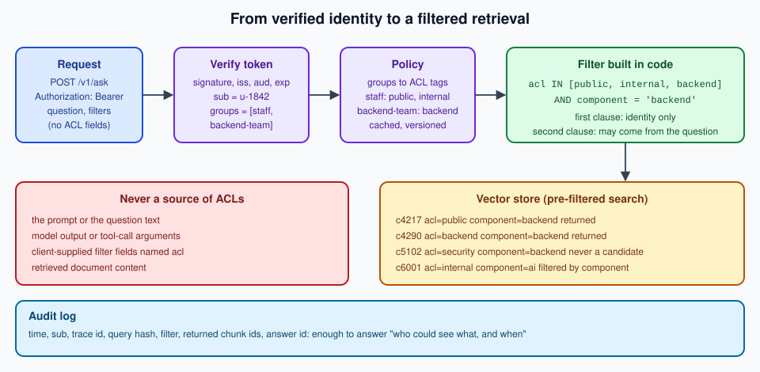

Access Control & Privacy
|
This content was generated with the assistance of AI and should be verified against the official documentation before being relied on in production. |
This page was written on 2026-09-30 against langchain-core 1.6.6, langchain-postgres 0.0.18 and PyJWT on Python
3.12, Spring AI 2.0.1 with Spring Security’s OAuth 2.0 resource server on Spring Boot 4.1.1, and LangChain4j 1.20.2 (see
the version baseline). The policy and filter functions were run with
hand-written claims against an in-memory vector store; the token verification, the pgvector filter and the Java classes
were checked against the released packages (the Java compiled) but not run against an identity provider or database.
A RAG system without access control is a data leak with a chat interface: it will happily summarise the security review for anyone who asks the right question. The fix is conceptually simple — only retrieve what the caller may read — and the details are where systems get it wrong. The metadata filter mechanics per store are on Metadata Filtering, OAuth 2.0 and JWT validation in OAuth (in particular JWT and JOSE and Scopes, Claims and Permissions), and the security checklist for the vector store in Production Considerations. This page puts them together for DocsAssistant.

ACLs as filters derived from identity
Every chunk carries an acl tag at ingestion (public, internal, backend, security, …), copied from the
permissions of its source document (see Ingestion Pipelines &
Freshness). At query time:
-
The API verifies the bearer token (signature, issuer, audience, expiry) and reads the subject and group claims.
-
A policy maps groups to the set of ACL tags the caller may read. The policy lives in code or a policy service, is versioned, and is the same for the REST API, the MCP server and batch jobs.
-
The retriever builds the ACL filter in code and ANDs it with any other filter (from the question, the UI or a router). The ACL clause is always present; a caller with no matching groups gets only
public, and a request without a token is rejected with401rather than served as a shared anonymous identity. -
The vector store applies the filter during the search (pre-filtering), so forbidden chunks are never candidates. Post-filtering the top is both a leak risk (scores and counts reveal information) and a recall bug (it can return nothing).
The rule that matters most: the ACL never comes from the prompt. Not from the question ("I am an admin"), not from model output or tool-call arguments, not from a client-supplied filter field, not from retrieved text. The model doesn’t decide what the caller can see; it only sees what the caller can see.
import os
from dataclasses import dataclass, field
import jwt
JWKS = jwt.PyJWKClient(os.environ["OIDC_JWKS_URL"])
ISSUER, AUDIENCE = os.environ["OIDC_ISSUER"], "docsassistant-api"
# group -> ACL tags readable by members; versioned with the service
POLICY: dict[str, set[str]] = {
"staff": {"public", "internal"},
"backend-team": {"backend"},
"security-team": {"security"},
}
@dataclass(frozen=True)
class Caller:
user_id: str
readable_acls: list[str] = field(default_factory=lambda: ["public"])
def readable_acls(groups: list[str]) -> list[str]:
tags = {"public"}
for group in groups:
tags |= POLICY.get(group, set())
return sorted(tags)
def caller_from_token(token: str | None) -> Caller:
if not token: # no shared "anonymous" identity: the API answers 401
raise jwt.InvalidTokenError("missing bearer token")
key = JWKS.get_signing_key_from_jwt(token)
claims = jwt.decode(token, key.key, algorithms=["RS256", "ES256"], audience=AUDIENCE, issuer=ISSUER)
return Caller(user_id=claims["sub"], readable_acls=readable_acls(claims.get("groups", [])))
def acl_filter(caller: Caller, extra: dict | None = None) -> dict:
"""PGVector filter; the ACL clause comes only from the verified caller."""
clauses = [{"acl": {"$in": caller.readable_acls}}]
if extra:
if "acl" in extra:
raise ValueError("Client filters must not name the acl field")
clauses.append(extra)
return {"$and": clauses} if len(clauses) > 1 else clauses[0]Source: PyJWT — Retrieve RSA signing keys from a JWKS endpoint and LangChain — PGVector (filtering).
A missing token raises like an invalid one, so the API answers 401, as its OpenAPI contract (bearerAuth) says. A
shared anonymous user would put every unauthenticated client on the same user ID, and so on the same thread IDs and
conversations; a public widget gets its own short-lived token per browser session instead.
The LangChain retriever for a request is then vector_store.as_retriever(search_kwargs={"k": 6, "filter":
acl_filter(caller)}), created per request; never cache a retriever built for one caller and reuse it for another.
Inside an agent, the tool reads the caller from the runtime context, as in
Conversational RAG &
Memory.
Spring AI: FILTER_EXPRESSION per request
VectorStoreDocumentRetriever reads a per-request filter from the advisor context under
VectorStoreDocumentRetriever.FILTER_EXPRESSION. Build it on the request thread from the authenticated Jwt and pass
it as an advisor parameter; the retriever then applies it to the vector search, including the parallel searches of a
query expander:
package com.example.docsassistant.rag.acl;
import java.util.List;
import java.util.Map;
import java.util.Set;
import java.util.TreeSet;
import org.springframework.ai.chat.client.ChatClient;
import org.springframework.ai.rag.advisor.RetrievalAugmentationAdvisor;
import org.springframework.ai.rag.retrieval.search.VectorStoreDocumentRetriever;
import org.springframework.ai.vectorstore.VectorStore;
import org.springframework.ai.vectorstore.filter.Filter;
import org.springframework.ai.vectorstore.filter.FilterExpressionBuilder;
import org.springframework.security.oauth2.jwt.Jwt;
import org.springframework.stereotype.Service;
@Service
public class AclAwareAskService {
static final Map<String, Set<String>> POLICY = Map.of(
"staff", Set.of("public", "internal"),
"backend-team", Set.of("backend"),
"security-team", Set.of("security"));
private final ChatClient chatClient;
public AclAwareAskService(ChatClient.Builder builder, VectorStore vectorStore) {
this.chatClient = builder.defaultAdvisors(RetrievalAugmentationAdvisor.builder()
.documentRetriever(VectorStoreDocumentRetriever.builder()
.vectorStore(vectorStore)
.filterExpression(new FilterExpressionBuilder().eq("acl", "public").build()) // default
.topK(6)
.build())
.build())
.build();
}
public static List<String> readableAcls(Jwt jwt) {
Set<String> tags = new TreeSet<>(Set.of("public"));
List<String> groups = jwt.getClaimAsStringList("groups");
if (groups != null) {
groups.forEach(g -> tags.addAll(POLICY.getOrDefault(g, Set.of())));
}
return List.copyOf(tags);
}
static Filter.Expression aclFilter(Jwt jwt, String component) {
var b = new FilterExpressionBuilder();
var acl = b.in("acl", readableAcls(jwt).toArray());
return component == null ? acl.build() : b.and(acl, b.eq("component", component)).build();
}
public String ask(Jwt caller, String question, String component) {
return chatClient.prompt()
.user(question)
.advisors(a -> a.param(VectorStoreDocumentRetriever.FILTER_EXPRESSION, aclFilter(caller, component)))
.call()
.content();
}
}Source: Spring AI — Retrieval
Augmented Generation (VectorStoreDocumentRetriever, filter expressions) and
Spring Security — OAuth 2.0
Resource Server JWT.
The default filterExpression on the retriever is the fail-safe: if a code path forgets the parameter, the caller
sees only public chunks, not everything. Do not read the identity from SecurityContextHolder inside a filter
Supplier: with a task executor, retrieval can run on a different thread where the security context is empty. The
QuestionAnswerAdvisor has the equivalent QuestionAnswerAdvisor.FILTER_EXPRESSION parameter. More Spring AI
security patterns — memory isolation and @PreAuthorize on tools — are on
Spring AI: Security & Guardrails.
LangChain4j: dynamicFilter from invocation parameters
LangChain4j’s EmbeddingStoreContentRetriever takes a dynamicFilter, a function of the Query, evaluated for every
retrieval. The caller’s readable ACLs travel with the call as InvocationParameters, a method parameter of the AI
service that is not sent to the model:
package com.example.docsassistant.l4j.acl;
import static dev.langchain4j.store.embedding.filter.MetadataFilterBuilder.metadataKey;
import java.util.List;
import dev.langchain4j.data.segment.TextSegment;
import dev.langchain4j.invocation.InvocationParameters;
import dev.langchain4j.model.chat.ChatModel;
import dev.langchain4j.model.embedding.EmbeddingModel;
import dev.langchain4j.rag.content.retriever.EmbeddingStoreContentRetriever;
import dev.langchain4j.service.AiServices;
import dev.langchain4j.service.UserMessage;
import dev.langchain4j.store.embedding.EmbeddingStore;
import dev.langchain4j.store.embedding.filter.Filter;
public final class AclAwareAssistant {
public interface DocsAssistant {
String ask(@UserMessage String question, InvocationParameters caller);
}
private AclAwareAssistant() {
}
static Filter aclFilter(InvocationParameters params) {
List<String> readable = params == null ? List.of("public") : params.getOrDefault("readableAcls", List.of("public"));
return metadataKey("acl").isIn(readable);
}
public static DocsAssistant create(ChatModel model, EmbeddingModel embeddings, EmbeddingStore<TextSegment> store) {
var retriever = EmbeddingStoreContentRetriever.builder()
.embeddingStore(store)
.embeddingModel(embeddings)
.maxResults(6)
.dynamicFilter(query -> aclFilter(query.metadata().invocationParameters()))
.build();
return AiServices.builder(DocsAssistant.class)
.chatModel(model)
.contentRetriever(retriever)
.build();
}
/** Called by the web layer after verifying the token. */
public static InvocationParameters forCaller(List<String> readableAcls) {
return InvocationParameters.from("readableAcls", readableAcls);
}
}Source: LangChain4j — RAG (Metadata Filtering, dynamic filter) and LangChain4j — AI Services (invocation parameters).
A missing parameter degrades to public, the same fail-safe as the Spring default.
Per-tenant indexes or shared-index filters
For a multi-tenant deployment (several customers on one service), the question is where the boundary is enforced:
| Model | How | Choose when |
|---|---|---|
Shared index, filter per request |
One table or collection; every chunk has |
Many small tenants; low operational cost. Requires perfect filter discipline and index support for selective filters. |
Partition per tenant |
One partition (PostgreSQL declarative partitioning) or namespace per tenant, same schema. |
Medium tenants; bulk deletion and per-tenant maintenance matter. |
Index or database per tenant |
A separate collection, schema or database per tenant; credentials scoped per tenant. |
Few large or regulated tenants; strongest isolation, per-tenant keys and residency; highest cost. |
The storage side of each model, including partial indexes and partitioning in pgvector, is on Metadata Filtering. Whatever the model, keep a second line of defence in the database: PostgreSQL row-level security on the chunks table with the tenant from a session variable makes a forgotten filter a failed query instead of a leak.
Entity-aware redaction
Some documents are readable by a user except for certain fields: an incident report whose customer names only the support team may see. Instead of excluding the whole document, redact entities according to the caller:
-
At ingestion, detect entities (with Presidio, see PII redaction at ingest) and store their spans and types in chunk metadata instead of removing them.
-
At query time, after retrieval and before the prompt, replace the spans of entity types the caller is not entitled to with typed placeholders (
<CUSTOMER>). -
Apply the same redaction to citations, snippets and cached answers; a cache keyed without the caller’s entitlements can serve an unredacted answer to the wrong user (see Caching, Latency & Cost).
Encryption, embeddings and data minimisation
-
In transit and at rest. TLS between every component, including to the vector store and the model endpoint; storage encryption for the database, backups and the object store with originals.
-
Embeddings are personal data too. Embedding inversion attacks can recover a surprising amount of the original text from vectors. Protect the vector store like the documents it was built from; do not treat vectors as anonymised.
-
Minimise. Index only what the assistant needs; drop fields (authors, emails) that do not help answers; apply retention to chunks derived from documents with retention rules.
-
Keys per tenant where the tenancy model requires it, with key rotation that includes the vector store.
Audit trails
For every answered request, record who asked, when, with which filter, and which chunk IDs were returned and cited — but not necessarily the question and answer text, which may themselves be sensitive:
| Field | Why |
|---|---|
|
Who and when; joins to traces. |
|
Which entitlements were applied. |
|
The exact filter sent to the store. |
|
What the caller could see and what the answer used; after an ACL mistake, this answers "who saw document X?". |
|
Correlate repeated questions without storing them. |
Write the audit log to append-only storage with its own retention, separate from application logs.
Data residency and on-premises models
Every prompt sends retrieved passages to the model provider. For documents that must not leave a jurisdiction or the
organisation’s boundary, the choices are: a model endpoint in the required region with contractual guarantees (no
training on inputs, bounded retention), or a self-hosted model. The routing can be per request: classify the ACL tags of
the retrieved chunks and send prompts containing security or customer-data chunks to an on-premises model
(Running Local LLMs in Production), everything else to the
hosted default. The same applies to embedding APIs at ingestion and to external parsing services (see
Document Parsing).
Permission-filtered retrieval, defence in depth, typed redaction, hash provenance, encryption and RBAC, GDPR data minimisation and the risk of leakage to vendors follow the concepts of Mendelevitch and Bao, Hands-On RAG for Production (Chapter 4), and Walls, Spring AI in Action (Chapter 10, securing RAG), paraphrased; see the bibliography.
References
-
Spring AI — Vector Databases (filter expressions)